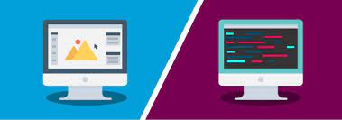

Фронтенд-разработчик: кто это, что должен знать и чем занимается
- Кто такой фронтенд-разработчик
- Чем занимается фронтенд-разработчик
- Что должен знать и уметь фронтенд-разработчик
Кто такой фронтенд-разработчик
Фронтенд-разработчик (Frontend Developer) — это специалист, который создает интерфейсы веб-сайтов и приложений. Проще говоря, разрабатывает внешний вид интернет-площадок: это картинки, выпадающие списки, анимация, карточки товаров и все, с чем может взаимодействовать пользователь.
Чем занимается фронтенд-разработчик
Фронтенд-разработчик создает страницу сайта по макету дизайнера. Он располагает блоки с информацией, добавляет контент,
встраивает анимацию и интерактивные кнопки, на которые пользователь может нажимать, чтобы перемещаться по платформе или
совершать действия.
Специалист должен учесть требования заказчика, техническое задание от дизайнера, при этом сделать
структуру сайта понятной и удобной.
Что должен знать и уметь фронтенд-разработчик
Если ты хочешь стать фронтенд-разработчиком, то должен быть готов к тому, что в этой профессии придется постоянно
учиться. Языки, функции и инструменты часто меняются, поэтому, чтобы оставаться востребованным специалистом, нужно
следить за трендами и уметь перестраиваться.
Примерный список базовых инструментов, необходимых frontend developer, выглядит так:
- HTML и CSS
- JavaScript
- JavaScript-фреймворки
- процессоры CSS
- сборщик проектов
- адаптивность и мобильный дизайн
- кроссбраузерность
- тестирование и отладка
- Git и системы контроля версий